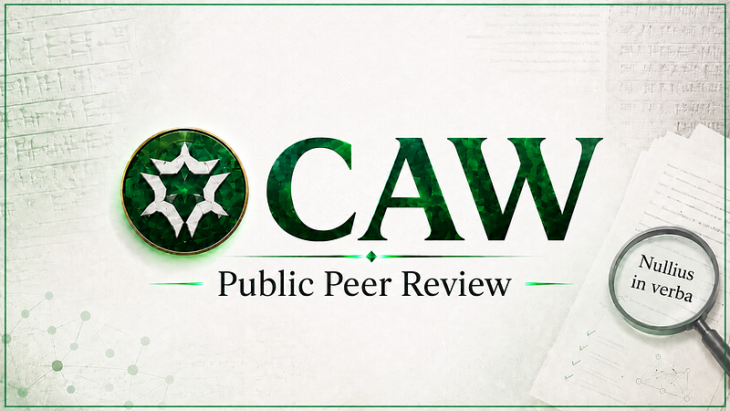

CAW PUBLIC PEER REVIEW
CAW PUBLIC PEER REVIEW
A Technical PUBLIC PEER REVIEW of GilgameshCaw/Caw
By tehppl

CAW has no king.
A Public Peer Review Statement On GilgameshCaw, CAW, And Manifesto Alignment
1. Purpose Of This Report
This report records the current public peer review position on GilgameshCaw/Caw, including the public claims displayed on test.caw.social.
The reviewed website, quoted verbatim, presents CAW as a decentralized, permissionless, trustless, unstoppable, unbreakable, on-chain, censorship-resistant social network. The page also describes validators, frontends, gasless EIP-712 actions, CAW username NFTs, staking, LayerZero archive replication, Arbitrum storage, immutable contracts, no admin keys, and the ability to reconstruct complete action history from blockchain events.
Those are material claims.
They should be recorded fairly.
They should also be tested.
This report is not a claim that no work was done.
It is not a claim that the testsite has no users.
It is not a claim that Gilgamesh is a proven scammer.
It is not a claim that LayerZero makes decentralization impossible in every design.
It is a narrower technical and evidentiary finding.
The current public record supports that GilgameshCaw/Caw appears to be a serious public software build, with visible development activity, visible testsite usage, and a substantial application stack.
The same record does not yet prove official CAW authority, cawmmunity acceptance, final deployed bytecode review, complete control-surface closure, LayerZero or OApp finality, independent historical recoverability, or manifesto-complete decentralization.
The public peer review record is preserved here.
https://github.com/Xubu-Trad/caw-public-peer-review
The working rule is simple.
A claim is not accepted because it appears on a website.
A claim is accepted when it is tied to a receipt, command, hash, address, transaction, verified source, reproducible script, public GitHub record, or public chain data.
2. Review Standard
The CAW manifesto is the standard used in this review.
The manifesto describes CAW as a cawmmunity process, not a leader-owned process.
The relevant standard is that a peer group should review smart contracts, that no leader controls the process, that ownership claims should be treated carefully, and that only a cawmmunity reviewed and accepted contract on a public GitHub is acceptable.
The manifesto also points to post-deployment key renouncement, no multisig, and no upgradeable proxies.
For that reason, this review does not treat any of the following as sufficient proof by itself.
A public GitHub repository.
A testsite.
A node installer.
A validator design.
A frontend.
A mainnet launch.
A promise to renounce.
A supporter claim.
A rotating homepage slogan.
A fork.
A social narrative.
Each may be relevant.
None is complete proof alone.
3. Public Claims Displayed By The Testsite
The public testsite displays rotating claims that describe the application as the world’s first unbreakable, permissionless, decentralized, trustless, unstoppable, censorship-resistant, and on-chain social network.
The help and resources text also describes CAW as a decentralized social protocol built on blockchain smart contracts, designed as a trustless social clearing house focused on freedom of speech, where no single person, entity, or group has ultimate control over the system.
The testsite states that CAW uses EIP-712 signature-based transactions for gasless social interactions.
It states that when users post, like, or follow, they sign a message off-chain with their wallet.
It states that validators collect these signatures and batch them into on-chain transactions on L2 networks such as Base.
It states that all actions are automatically archived to multiple blockchain networks through LayerZero cross-chain messaging.
It states that the data is stored on both the L2 network and archive chains such as Arbitrum.
It states that, even if one network goes offline or censors content, the data remains permanently accessible on archive chains.
It states that, as long as at least one archive chain remains accessible, complete history of actions can be reconstructed from blockchain events.
It states that contracts are immutable and have no admin keys.
It states that anyone can verify the data, run their own client, or build alternative frontends.
It states that validators and frontends are permissionless and can be run by anyone.
It states that frontends may implement their own content moderation policies, but users blocked from one frontend can access CAW through another frontend or directly through contracts.
It states that users burn CAW tokens through a smart contract to mint an NFT username.
It states that the username NFT becomes the user’s account identity.
It states that staking CAW allows users to perform platform actions such as posting, liking, and recawing.
It states that CAW spent on the platform is distributed to participants, including stakers and original posters.
It states that CAW has no official socials, partner projects, or further releases beyond what was described in the manifesto.
Those statements are now part of the review record.
They are not ignored.
They are treated as public claims requiring proof.
4. Public Website Claims That Require Direct Proof
The testsite claim that CAW has no single controller requires proof across contracts, validators, frontends, APIs, indexers, databases, operator configuration, and cross-chain settings.
The testsite claim that contracts are immutable and have no admin keys requires deployed contract addresses, verified source, bytecode matching, owner checks, admin checks, proxy slot checks, implementation slot checks, upgrade function review, multisig review, and setup function review.
The testsite claim that validators are permissionless requires proof that any independent validator can join, submit valid batches, avoid gatekeeping, reconstruct the queue, and operate without approval from one operator.
The testsite claim that frontends are permissionless requires proof that an independent frontend can read the public record, submit user actions, and operate without dependence on a single API, private indexer, private database, or default frontend.
The testsite claim that data is automatically archived through LayerZero requires endpoint addresses, delegate addresses, peer configuration, trusted remote configuration, archive-chain registration, message verification details, and proof that critical routing or trust assumptions cannot later be changed by one operator.
The testsite claim that complete action history can be reconstructed from blockchain events requires an empty-database rebuild from public chain data and a deterministic export hash that an independent reviewer can reproduce.
The testsite claim that content cannot be censored requires more than storage across chains.
It requires proof that actions cannot be excluded by validators, hidden by indexers, filtered by default APIs, lost in queues, or practically made unreachable through dependence on one frontend.
The testsite claim that user identity is owned through username NFTs requires final deployed ERC-721 contract addresses, ownership checks, transfer logic review, fee path review, custody assumption review, and bytecode verification.
The testsite claim that staking distributes CAW to participants requires contract-level proof of fee flows, state transitions, accounting logic, and deployed source verification.
The testsite claim that CAW has no official socials, partner projects, or further releases beyond the manifesto also matters.
If true, then no later builder can claim official authority by social repetition alone.
Authority must come from verifiable receipts.
5. Original CAW Token Receipt Record
The original CAW token contract is recorded as follows.
CAW token contract.
0xf3b9569f82b18aef890de263b84189bd33ebe452
CAW deployer.
0x36B59455AfeEdf0866FE6E775FE7651bbBe3e005
CAW creation transaction.
0x4d160fb54fbf45ec2c0cc9d6010c2f215b1d448dcf310ce7019eeac70422515c
Deployer IDM message transaction.
0x7903adbb7ab03521da9951d63cc9050ee005dfa871ba3f6d3e20d0bb941f5c37
The recorded deployer message includes the phrase.
teh appointed time and appointed place. be well whitehat
It also links the manifesto and the GitHub anchor.
https://github.com/cawdevelopment
These receipts are material because they place the CAW deployer, the CAW token, the manifesto, and cawdevelopment in the same public evidence chain.
They cannot be dismissed as irrelevant history without stronger contrary evidence.
6. Original CAW Token Control Surface
The review records a bounded technical finding about the original CAW ERC20 token.
The audit receipts state that the EIP-1967 proxy admin slot returned zero.
0x0000000000000000000000000000000000000000000000000000000000000000
The EIP-1967 implementation slot also returned zero.
0x0000000000000000000000000000000000000000000000000000000000000000
The same audit lane records delegatecall as false.
It records runtime length as 2278.
It records runtime SHA-256 as follows.
ac5c77c1372337655d8f0257e34feec1ab0506dc8e8e7f034252cba66390bea1
It records push-aware opcode counts as zero for these opcode families.
CALL
CALLCODE
DELEGATECALL
STATICCALL
CREATE
CREATE2
SELFDESTRUCT
It also records runtime equality against a similar-match contract at the runtime level.
The bounded meaning is this.
The original CAW ERC20 token does not present, in that audit lane, a typical hidden proxy admin, implementation slot, delegatecall, create, or selfdestruct control surface.
This does not prove safety from whale behavior.
It does not prove safety from liquidity events.
It does not prove safety from exchange custody.
It does not prove safety from unrelated future contracts.
It only speaks to the tested CAW token runtime control surface.
7. Funding And Origin Trail
The recorded origin trail contains the following transactions.
SHIB deployer labeled address to intermediary.
Transaction.
0xb5b81a63c957fcc33469d59f9c969e860d24574bb72d8b2fc482c7232cb13062
From.
0xB8f226dDb7bC672E27dffB67e4adAbFa8c0dFA08
To.
0x81A0daaab45dBbcE68b11E7AEdDd6A0D1970bdeA
Value.
2.78 ETH
Intermediary to CAW deployer.
Transaction.
0xbfed9c9fe98cf7705b6668afbe9f01c81310f062ae5853b2ac31efd2847f44f0
From.
0x81A0daaab45dBbcE68b11E7AEdDd6A0D1970bdeA
To.
0x36B59455AfeEdf0866FE6E775FE7651bbBe3e005
Value.
2.22 ETH
CAW token creation.
Transaction.
0x4d160fb54fbf45ec2c0cc9d6010c2f215b1d448dcf310ce7019eeac70422515c
Created contract.
0xf3b9569f82b18aef890de263b84189bd33ebe452
The finding is bounded.
The origin trail exists as a receipt sequence.
It supports the importance of the CAW deployer, the CAW token, the manifesto, and cawdevelopment.
It does not identify Gilgamesh as the original CAW deployer.
It does not prove any real world identity.
It does not prove motive.
8. Gilgamesh Mainnet Linkage Claim
The claim that Gilgamesh controls original CAW is not supported by the captured probe output.
The article receipt records an address walk for the tested Gilgamesh linked EOA.
The output states.
tx items: 3
direct tx touching CAW deployer/token: []
CAW token transfers involving gilg: 0
The recorded artifact hashes for that probe are as follows.
9977e4f930f374aa0a43f4eec210158912002204f9667d4fb40a72b1fb8fc575
4336aacae53bcd26ad591f6bb625406fb74412b6e0d08b5cd1fdc30876a0a7df
The bounded conclusion is this.
The captured mainnet probe does not establish a direct transaction path from the tested Gilgamesh linked EOA to the CAW deployer or CAW token.
It also does not prove that no relationship exists through another wallet, private account, alternate identity, or untested path.
The correct status is not proven.
9. Public GitHub And Permissioned Authority
The public GitHub evidence is also bounded.
The article records a public membership check for GilgameshCaw against cawdevelopment.
The endpoint returned.
http=404
The article also records a repo scoped authored issues and pull requests search.
The result returned.
total_count: 0
The fork lineage receipt records that both GilgameshCaw/Caw and cawdevelopment/CawUsernames share the parent.
MasterSprouts/CawUsernames
The bounded conclusion is this.
The public checks do not establish public permissioned GitHub linkage.
The 404 result does not exclude private membership.
The zero authored issue and pull request result does not exclude alternate accounts.
The fork lineage is consistent with permissionless copying.
Therefore, official builder status is not proven by the public GitHub checks shown.
10. Base Sepolia Ownership Signals
The Base Sepolia probe records testnet ownership signals.
The probe recorded chain ID.
0x14a34
It recorded five contracts where owner() returned.
0xf71338f3eaa483aa66125598B09BA1988e694a95
The listed Base Sepolia contract addresses were.
0x55c66cabf9766aefb3a770d9ea64e218df195d9b
0x56817dc696448135203c0556f702c6a953260411
0xad0c695d2f33797241e7dc4d019883d67dce8eec
0xefdcb58f7180cda18249446b798b373c946e85ed
0xfd0ade8a11bdd8771b3112c91294edb1597a1f4d
The same probe recorded no rows where proxy admin equaled 0xf713....
The bounded conclusion is this.
This is evidence of Base Sepolia testnet ownership for specific contracts in the probe set.
It is not evidence of Base mainnet authority.
It is not evidence of Ethereum mainnet CAW custody.
It is not evidence of control over the original CAW ERC20 token.
11. GilgameshCaw/Caw As A Public Software Build
The review should not minimize the visible work in GilgameshCaw/Caw.
The public GitHub repository exists.
It is public.
At the time of the review snapshot, it was visible as a fork of MasterSprouts/CawUsernames.
It showed a substantial commit history.
It contained a README presenting the project as a CAW Protocol and describing it as a trustless and decentralized social clearing house.
It provided a one line node installer.
It claimed support for EIP-712 signed actions, permissionless validators, Ethereum L1, Base L2, Arbitrum archive chain, and LayerZero based archive replication.
It contained documentation links for architecture, data flow, node operation, validator setup, migrations, smart contracts, client replication, backend services, direct messaging, marketplace features, session keys, and a ZK signature only path.
It described a service architecture including a frontend, REST API, database, validator service, blockchain event processors, raw event gatherers, raw event providers, direct messaging services, marketplace indexing, chain synchronization, instance registry, scheduled post processing, and view tracking.
It described a node installation path that installs or configures Node 22, pm2, nginx, Postgres, Redis, Elasticsearch, certbot, API services, indexers, validator configuration, RPC URLs, optional replication, and TLS.
Those facts support one neutral conclusion.
GilgameshCaw/Caw is not merely a static webpage or an empty social screen.
It appears to be a serious public software build with contracts, backend services, frontend services, indexing infrastructure, validator related components, database dependencies, node installation tooling, multi network assumptions, and user facing social features.
That is material.
It should be credited accurately.
This review does not claim that nothing was built.
It does not claim that the repository is empty.
It does not claim that the testsite has no usage.
It does not claim that node, validator, TxQueue, notification, polling, mobile, multi network, or action processing work is irrelevant.
Those are real review subjects.
They may represent meaningful engineering progress.
The question is whether that engineering progress satisfies the CAW manifesto standard.
On the present record, it does not yet close that standard.
A serious build is not the same as official authority.
A public repository is not the same as cawmmunity acceptance.
A node installer is not the same as independent recoverability.
A validator service is not the same as censorship resistance.
A LayerZero replication design is not the same as finalized cross-chain trust closure.
A functioning frontend is not the same as protocol decentralization.
A technical launch is not the same as manifesto-aligned acceptance.
Therefore, the proper status is balanced.
GilgameshCaw/Caw appears to be a serious public build.
The final proofs required by the CAW manifesto remain incomplete.
12. Specific Technical Areas Requiring Final Proof
The following items are not criticisms by themselves.
They are the visible technical areas that must be reviewed before the build can be treated as manifesto complete.
Node Operation
The repository and testsite describe a one line installer and a node path.
That supports the claim that node operation is being attempted.
The missing proof is independent reproducibility.
A reviewer must be able to start with an empty machine and empty database, use public instructions, sync from published chain IDs, published contract addresses, and published start blocks, then export the reconstructed record with a deterministic hash.
Validator Operation
The repository and testsite describe validator related services and permissionless validators.
That supports the claim that validator infrastructure is part of the design.
The missing proof is control analysis.
The review must determine who can validate, who can submit batches, whether validators can censor signed actions, whether the queue can be independently reconstructed, whether failed actions are preserved, and whether users can bypass a default validator path.
Event Indexing
The repository describes ActionProcessor, RawEventsGatherer, RawEventsProvider, and ChainSyncService.
That supports the claim that the system relies on event processing and indexing.
The missing proof is deterministic recovery.
A second operator must be able to reconstruct the same event derived record without relying on Gilgamesh’s private database, private API, private indexer, or default frontend.
Backend And Database Stack
The repository describes Postgres, Redis, Elasticsearch, API services, and backend workers.
That supports the claim that the system is operationally substantial.
The missing proof is decentralization of dependency.
The review must determine whether these services are replaceable by independent operators, whether their outputs are deterministic, and whether public chain data is sufficient to reproduce the visible record.
Frontend And API
The testsite states that frontends are user-facing applications that read blockchain data, display posts, and submit user actions to validators.
It states that each frontend can implement its own moderation policies, design choices, and features while interacting with the same underlying protocol.
That supports the claim that frontend separation is part of the design.
The missing proof is independence.
The protocol claim is stronger only if users can view or reconstruct the unfiltered record without depending on one default frontend, one default API, or one default operator.
Direct Messaging
The repository describes direct messaging components.
The testsite states that a CAW username NFT grants access to an account, including CAW balance and direct messages.
That supports the claim that private messaging is in scope.
The missing proof is separate from CAW acceptance.
Direct message security needs its own review of key handling, metadata leakage, relay trust, message persistence, recovery assumptions, and failure modes.
Marketplace, Profile, And Username NFTs
The testsite states that users burn CAW tokens through a smart contract to mint an NFT that becomes a username.
It states that fewer characters cost more.
It states that this NFT grants access to the account.
That supports the claim that profile and username identity are core parts of the system.
The missing proof is contract level review.
Marketplace, profile, and username contracts must be reviewed for owner and admin control, upgradeability, fee paths, custody assumptions, transfer logic, access assumptions, and final deployed bytecode.
Session Keys And Quick Sign
The repository describes scoped, spend capped key delegation for usability.
The testsite describes gasless actions based on off-chain signatures.
That supports the claim that the system attempts to reduce signing friction.
The missing proof is wallet risk review.
Session keys and gasless signing must be reviewed for scope limits, expiry, revocation, spend caps, privilege boundaries, replay protection, user consent, and whether users can understand the delegated permissions.
ZK Signature Only Path
The repository describes an optional Groth16 verified batching path.
That supports the claim that ZK batching is being explored.
The missing proof is production relevance.
The review must determine whether the ZK path is actually deployed, whether it is used, whether its verifier matches reviewed circuits, and whether it improves or worsens the current trust model.
LayerZero Archive Replication
The testsite states that all actions are automatically archived to multiple blockchain networks through LayerZero cross-chain messaging.
It states that data remains accessible on archive chains such as Arbitrum.
It states that complete action history can be reconstructed as long as at least one archive chain remains accessible.
Those are strong claims.
The missing proof is configuration finality and independent reconstruction.
The review must identify endpoints, delegates, peers, trusted remotes, archive-chain registration, message verification, and whether any operator can later change routing or trust assumptions.
The review must also prove the reconstruction claim with an empty database rebuild and deterministic export hash.
Smart Contracts
The repository contains Solidity contracts and deployment scripts.
The testsite states that the contracts are immutable and have no admin keys.
That supports the claim that onchain components are central to the system.
The missing proof is final deployment verification.
The review must publish final deployed addresses, verified source, bytecode matches, owner and admin status, proxy checks, multisig checks, setup proof, and evidence that no critical admin path remains.
Staking And Platform Economics
The testsite states that staking CAW allows users to perform actions.
It states that posting distributes CAW to stakers.
It states that liking sends CAW to the original poster.
It states that recawing splits CAW between the poster and stakers.
It states that following sends CAW to stakers.
Those are economic claims.
The missing proof is contract level fee flow verification.
The review must verify the deployed contracts, accounting logic, distribution logic, fee recipients, withdrawal logic, and whether any operator can change those parameters.
Testsite Usage
The testsite usage evidence supports that people are using or testing the system.
The recorded comparison in the proof pack was approximately as follows.
CAW holders.
26,949
Gilgamesh testsite total users.
2,281
Gilgamesh testsite weekly active users.
958
Those numbers support usage.
They do not prove holder-wide review, cawmmunity acceptance, final contract acceptance, or manifesto-complete decentralization.
13. Nodes And Validators
A node can be a legitimate part of a decentralized social protocol.
A node may read chain data, organize posts, likes, follows, reposts, names, and action history, then expose that record to a usable frontend.
This can be useful.
The question is whether it is independently reproducible.
A node claim is proven only when another operator can begin from zero and rebuild the same public record without relying on Gilgamesh’s private database, private API, private indexer, private configuration, or default frontend.
A validator can also be useful.
If users sign actions, a validator can verify those signatures, place actions into a queue, batch them, and submit them to chain.
This can reduce friction.
It can reduce repeated gas use.
It can make an onchain social protocol feel closer to a normal social application.
The technical questions remain.
Who can validate.
Who can submit batches.
Who controls the queue.
Whether signed actions can be censored.
Whether failed actions are preserved.
Whether another validator can reconstruct the same queue from public inputs.
Whether users can bypass the default validator path.
Whether the system survives if Gilgamesh’s validator stack goes offline.
The words node and validator do not prove decentralization.
They identify components that must be reviewed.
14. Renouncement
A common defense is that ownership can be renounced later.
That is not enough.
Renouncing one owner address may close one control path.
A complete review must check every control surface.
Owner roles.
Admin roles.
Proxy slots.
Implementation slots.
Upgrade functions.
Multisig authority.
One time setters.
Unconsumed setup functions.
Privileged configuration functions.
LayerZero and OApp delegate settings.
Peer configuration.
Trusted remotes.
Frontend dependency.
API dependency.
Indexer dependency.
Validator dependency.
Database dependency.
Operator stack dependency.
The controlling question is this.
Can any human operator still shape, censor, redirect, upgrade, configure, or selectively reconstruct the protocol path.
Until that is answered with public proof, decentralization is not proven.
15. LayerZero And OApp
LayerZero or OApp use is not automatically disqualifying.
It is also not automatically manifesto compatible.
Cross-chain messaging introduces trust and configuration questions.
The review must identify endpoint addresses.
It must identify delegates.
It must identify peers.
It must identify trusted remotes.
It must identify archive-chain configuration.
It must identify message verification.
It must identify finality of configuration.
It must determine whether any operator can later change routing or trust assumptions.
If cross-chain configuration can shape the record, it is a control surface.
It must be reviewed as one.
16. Public Trail
Public history matters because the manifesto is a governance warning.
Public statements about being a builder, developer, maker, leader, or central organizer are relevant to the manifesto review.
They are not bytecode proof.
They do not prove criminal intent.
They do not prove original CAW custody.
They do not prove malicious code.
They are governance-context evidence.
They explain why the cawmmunity should require receipts rather than assurances.
The public trail should be recorded, hashed, and separated from technical findings.
The final technical question remains the same.
Does the final system prove it is not controlled by the person asking everyone to trust it.
17. No Proof Means No Authority
If a person claims authority, the burden is on that person to prove it.
Minimal proof could include a verifiable signature.
It could include an onchain action.
It could include permissioned proof from cawdevelopment.
It could include another reproducible proof chain that does not require trusting a voice.
Absent that proof, the authority claim remains unproven.
Not proven true.
Not proven false.
Unproven.
The practical rule is simple.
No proof means no authority by default.
18. Claims Not Made
This review does not claim that Gilgamesh is a proven scammer.
This review does not claim criminal intent.
This review does not claim that nobody uses the testsite.
This review does not claim that LayerZero makes decentralization impossible in every design.
This review does not claim that final bytecode has failed before final bytecode is reviewed.
This review does not claim that testnet ownership equals mainnet custody.
This review does not claim that public GitHub activity equals official CAW authority.
This review does not claim that public website claims are false.
This review says public website claims are unproven until independently verified.
19. Required Proof To Close The Review
The review can be closed or narrowed by public evidence.
The required evidence is straightforward.
Final deployed contract addresses for every chain.
Verified source matching deployed bytecode.
Owner and admin status for every critical contract.
Proxy and upgradeability checks.
Multisig checks.
Consumed one time setup proof.
LayerZero and OApp endpoint proof.
Delegate proof.
Peer proof.
Trusted remote proof.
Config finality proof.
Exact node rebuild instructions.
Empty database historical rebuild output.
Deterministic export hashes.
Independent rerun matching those hashes.
Validator admission proof.
Validator censorship-resistance proof.
Queue reconstruction proof.
Frontend independence proof.
API independence proof.
Indexer reproducibility proof.
Username NFT contract review.
Staking and fee-flow verification.
Public review history.
Cawmmunity acceptance record.
Verifiable authority proof if official status is claimed.
20. Final Finding
The record supports a balanced conclusion.
GilgameshCaw/Caw appears to be a serious public software build.
It has visible development activity.
It has visible testsite usage.
It appears to include meaningful work on node operation, validators, action queues, indexing, notifications, polls, mobile user experience, multiple networks, action processing, direct messaging, marketplace components, username NFTs, staking, session keys, and archive replication.
The public testsite also makes strong claims about being decentralized, permissionless, trustless, unstoppable, censorship-resistant, gasless for most actions, immutable, no-admin-key, LayerZero archived, Arbitrum backed, and reconstructable from blockchain events.
Those facts matter.
They should be recorded accurately.
The same record also shows that the required manifesto proofs remain incomplete.
The record does not prove Gilgamesh controls the original CAW token.
The record does not prove Gilgamesh is official CAW authority.
The record does not prove cawmmunity acceptance.
The record does not prove final deployed bytecode matches reviewed source.
The record does not prove every owner, admin, proxy, upgrade, multisig, setup, validator, API, indexer, database, frontend, LayerZero, and operator control path is closed.
The record does not prove independent historical recoverability from public chain data.
The record does not prove manifesto-complete decentralization.
The status remains.
Under review.
Not proven manifesto complete.
No proof means no authority.